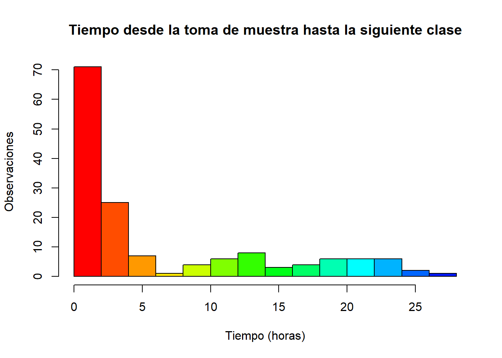

Estado de las aulas de UTEC fuera del horario de clases
Introducción
Relevancia
Los ambientes con los que cuenta UTEC para que sus alumnos estudien ya sea de manera grupal o individual no siempre satisface el número de estudiantes que se encuentran fuera de clases. Es por ello que algunos optan por aulas desocupadas. Estas a pesar de no estar en uso deben de cumplir con un buen estado para que los alumnos tengan un ambiente agradable.
Objetivos
Verificar que la limpieza de las aulas de la Universidad de Ingeniería y Tecnología, cumplan con el aforo permitido y presenten un buen proceso de saneamiento.
Comprender la relación que existe entre los alumnos de UTEC y el estado de las aulas fuera de clases
Brindar información a la comunidad universitaria y servicio de limpieza de la Universidad de Ingeniería y Tecnología, con el fin de mejorar la planificación y mantenimiento de limpieza de las aulas de UTEC.
Contexto
Las universidades deben garantizar un entorno limpio y ordenado en sus aulas para brindar a sus estudiantes un ambiente adecuado durante sus clases. La Universidad de Ingeniería y Tecnología (UTEC), ubicada en el distrito de Barranco, cuenta con una población estudiantil de aproximadamente 4000 estudiantes tanto de pre-grado como de postgrado. Actualmente, la universidad tiene un horario de limpieza establecido para cada aula. Sin embargo, sería beneficioso reorganizar el horario de limpieza considerando las aulas más frecuentadas por los estudiantes, de manera que estén en óptimas condiciones fuera del horario de clases, ya que algunos estudiantes utilizan estos espacios para estudiar durante sus horas libres o llevar a cabo otras actividades. El presente estudio se centra en analizar la relación entre los alumnos de UTEC y el estado de las aulas fuera de clases, así como la influencia de los estudiantes que utilizan las aulas para estudiar en el estado general de las mismas. La información obtenida será utilizada para informar y mejorar el proceso de limpieza y mantenimiento de las aulas en la Universidad de Ingeniería y Tecnología
Proceso de recolección
Accedimos a las aulas que no estaban reservadas para actividades especificas, como reuniones, asesorías, clases entre otras. A distintas horas y distintas fechas. Mediante la observación anotamos los datos que requeríamos. Además también usamos la información que nos brindan las cartillas y los horarios que se encuentran en cada aula.
Librerías
library(readr)
library(dplyr)
library(ggplot2)
library(lubridate)Funciones
Redondeo
r <- function(x){
return(round(x, digits = 2))
}Covarianza
cv <- function(x, ...){
return(sd(x, ...)/mean(x, ...))
}Base de datos
Carga de datos
Usamos la librería readr en la cual tenemos acceso a la función read_csv() la cual usaremos para cargar nuestros datos a la variable Data:
DF <- read_csv("BDPRO.csv")Rows: 150 Columns: 19
-- Column specification --------------------------------------------------------
Delimiter: ","
chr (11): Aula, Tipo, Fecha, Ordenado, Aforo, Pizarra, Tacho, UltimaLimpieza...
dbl (8): Piso, Hora, Limpio, Dispositivos, Alumnos, Ventanas, UltimaClase, ...
i Use `spec()` to retrieve the full column specification for this data.
i Specify the column types or set `show_col_types = FALSE` to quiet this message.DF# A tibble: 150 x 19
Aula Tipo Piso Hora Fecha Limpio Ordenado Aforo Dispositivos Pizarra
<chr> <chr> <dbl> <dbl> <chr> <dbl> <chr> <chr> <dbl> <chr>
1 A903 Aula norm~ 9 12 02/0~ 5 Si Si 4 Si
2 A906 Aula norm~ 9 10 26/0~ 5 No Si 0 Si
3 M601 Laborator~ 6 15 25/0~ 5 Si Si 10 Si
4 A905 Aula norm~ 9 12 02/0~ 3 Si Si 2 Si
5 A202 Aula norm~ 2 17 03/0~ 4 Si Si 3 Si
6 A704 Aula norm~ 7 20 03/0~ 3 No No 2 Si
7 A705 Aula norm~ 7 16 03/0~ 3 No Si 4 No
8 A901 Aula norm~ 9 12 26/0~ 4 No Si 3 No
9 A702 Aula norm~ 7 15 27/0~ 5 No No 3 No
10 A1002 Aula norm~ 10 12 02/0~ 3 Si Si 4 Si
# i 140 more rows
# i 9 more variables: Alumnos <dbl>, Ventanas <dbl>, Tacho <chr>,
# UltimaClase <dbl>, UltimaLimpieza <chr>, SiguienteClase <dbl>,
# Uclaseh <chr>, Sclaseh <chr>, Intervalo <chr>Variables
Contamos con 9 categóricas y 5 numéricas y 2 fechas
spec(DF)cols(
Aula = col_character(),
Tipo = col_character(),
Piso = col_double(),
Hora = col_double(),
Fecha = col_character(),
Limpio = col_double(),
Ordenado = col_character(),
Aforo = col_character(),
Dispositivos = col_double(),
Pizarra = col_character(),
Alumnos = col_double(),
Ventanas = col_double(),
Tacho = col_character(),
UltimaClase = col_double(),
UltimaLimpieza = col_character(),
SiguienteClase = col_double(),
Uclaseh = col_character(),
Sclaseh = col_character(),
Intervalo = col_character()
)| Variable | Tipo | Restricción |
|---|---|---|
| Aula | Categórica nominal | Codificación que asigna UTEC a sus aulas |
| Tipo | Categórica nominal | Aula normal, Aula pequeña, Laboratorio o Aula mixta |
| Piso | Numérica discreta | [1,10] |
| Hora | Numérica discreta | [7,22] |
| Fecha | Fecha | A partir de 24/04 |
| Limpio | Categórica ordinal | Del 1 al 5 |
| Ordenado | Categórica nominal | Si o no |
| Aforo | Categórica nominal | Si o no |
| Dispositivos | Numérica discreta | [0,5] |
| Pizarra | Categórica nominal | Si o no |
| Alumnos | Numérica discreta | Entero mayor o igual a 0 |
| Ventanas | Numérica discreta | Entero mayor o igual a 0 |
| Tacho | Categórica nominal | Si o no |
| Ultima clase | Numérica continua | Número positivo |
| Ultima limpieza | Fecha | A partir de 17/04 |
| Siguiente clase | Numérica continua | Número positivo |
Renombrar variables
Ahora que todas las variables están correctamente definidas. Renombraremos unas cuentas para facilitar su uso al momento de programar.
DF %>% rename(Uclase = UltimaClase) -> DF
DF %>% rename(ULimpieza = UltimaLimpieza) -> DF
DF %>% rename(Sclase = SiguienteClase) -> DF
DF %>% rename(Disp = Dispositivos) -> DF
DF %>% rename(Ord = Ordenado) -> DF
DF# A tibble: 150 x 19
Aula Tipo Piso Hora Fecha Limpio Ord Aforo Disp Pizarra Alumnos
<chr> <chr> <dbl> <dbl> <chr> <dbl> <chr> <chr> <dbl> <chr> <dbl>
1 A903 Aula normal 9 12 02/05~ 5 Si Si 4 Si 9
2 A906 Aula normal 9 10 26/04~ 5 No Si 0 Si 6
3 M601 Laboratorio 6 15 25/04~ 5 Si Si 10 Si 0
4 A905 Aula normal 9 12 02/05~ 3 Si Si 2 Si 2
5 A202 Aula normal 2 17 03/05~ 4 Si Si 3 Si 8
6 A704 Aula normal 7 20 03/05~ 3 No No 2 Si 0
7 A705 Aula normal 7 16 03/05~ 3 No Si 4 No 1
8 A901 Aula normal 9 12 26/04~ 4 No Si 3 No 7
9 A702 Aula normal 7 15 27/04~ 5 No No 3 No 0
10 A1002 Aula normal 10 12 02/05~ 3 Si Si 4 Si 10
# i 140 more rows
# i 8 more variables: Ventanas <dbl>, Tacho <chr>, Uclase <dbl>,
# ULimpieza <chr>, Sclase <dbl>, Uclaseh <chr>, Sclaseh <chr>,
# Intervalo <chr>Recategorización de variables
Debido a que la variable Limpio es una escala de satisfacción del 1 al 5 R lo toma como numérica, por lo que la recategorizaremos a categórica.
Además a las variables Fecha y ULipieza las definiremos de tipo fecha
DF$Limpio <- as.character(DF$Limpio)
DF$Uclaseh <- gsub(",", ".", DF$Uclaseh)
DF$Uclaseh <- as.numeric(DF$Uclaseh)
DF$Sclaseh <- gsub(",", ".", DF$Sclaseh)
DF$Sclaseh <- as.numeric(DF$Sclaseh)Análisis Descriptivo
Univariado
Hora
Descriptores numéricos
En esta variable a diferencia de la anterior observamos que la diferencia entre el promedio y la mediana es mínima. Esto se podría interpretar como una mejor distribución de los datos.
r(mean(DF$Hora))[1] 14.69median(DF$Hora)[1] 15En este caso el coeficiente de variación es menor que 0.3 por lo que el promedio sera quien determine la distribución de los datos
r(cv(DF$Hora))[1] 0.2Gráficos
0% 25% 50% 75% 100%
9 13 15 17 21 Según el diagrama de caja podemos observar que la mayor parte de nuestros datos se encuentran entre las 13 y 17 horas. Además de no tener datos atípicos y mostrar una buena distribución de los datos en la variable.

Ahora si ubicamos la información en un gráfico de barras, contemplamos la existencia de 2 modas como habíamos mencionado anteriormente. Las cuales vendrían a ser las 13 y 15 horas. Interpretando estos datos junto con la gráfica, concluimos que es mas probable encontrar un salón desocupado a las 13 y entre las 15 y 17 horas.
Alumnos
Descriptores numéricos
Es notable que el coeficiente de variación es alto, esto nos da a entender que tiene una distribución muy dispersa, lo que podría significar un sesgo.
r(cv(DF$Alumnos))[1] 0.92Para corroborar esto nos fijaremos en el promedio y la mediana. Debido a que el promedio > mediana , esperaremos ver un sesgo a la derecha en el histograma
r(mean(DF$Alumnos))[1] 6median(DF$Alumnos)[1] 5Gráficos

Consideramos que un diagrama de caja es lo ideal para mostrar esta variable, debido a que podemos ubicar de mejor manera los datos. Concluyendo que a pesar que los datos se encuentran al rededor de 5 alumnos. Un 25% de las veces que se tomaron los datos las aulas se encontraban vacías. Por lo que Podemos encontrar de 1 hasta 9 alumnos en un salón. Sin embargo también es muy probable de que el aula este vacía.
quantile(DF$Alumnos) 0% 25% 50% 75% 100%
0.00 1.00 5.00 9.75 24.00 Evento atómico: Probabilidad empírica de que el aula este vacía (0 alumnos)
[1] 0.1866667Esto puede servir para un alumno que desee encontrar aula vacía
Bivariado
Tipos de aula ~ Aforo

De acuerdo al gráfico presentado, se muestra la distribución de los diferentes tipos de aulas en UTEC en relación con su capacidad de aforo. Este análisis estadístico nos permite observar la proporción de aulas que cumplen con el aforo establecido.
Los resultados revelan que las aulas mixtas de UTEC son las que mejor cumplen con el aforo establecido, mostrando una proporción significativa de aulas que respetan dicha capacidad. Por otro lado, la mayoría de las aulas normales también cumplen con el aforo, aunque se observa que más de la mitad de los registros correspondientes a estas aulas indican que no se cumple el aforo permitido. Por último, se destaca que las aulas pequeñas son el tipo de aula en el cual no se cumple el aforo establecido.
Estos hallazgos evidencian la importancia de monitorear y garantizar el cumplimiento del aforo en las aulas, especialmente en aquellas de menor capacidad, a fin de asegurar un ambiente adecuado y seguro para los estudiantes y el personal académico.
Limpieza ~ Tiempo (Ultima clase - Toma de muestra (minutos) ~ Tipo de aulas

De acuerdo con el gráfico presentado, podemos observar cuatro tipos de aulas (mixtas, normales, pequeñas y laboratorios), con puntuaciones de limpieza del 0 al 5 (eje y), considerando 0 como considerablemente sucias y 5 como considerablemente limpias. Estas puntuaciones están relacionadas con el tiempo transcurrido en minutos desde la última clase hasta el momento en que se tomó la muestra (eje x).
En cuanto a las aulas mixtas, en su mayoría obtienen puntuaciones de 4 y 5. Las muestras no superan los 360 minutos, lo que indica que durante los primeros 360 minutos desde el final de una clase, estas aulas logran mantenerse limpias y como mínimo se encuentran con una calificación de 2, lo cual significa que están sucias pero no en gran medida.
Con respecto a las aulas normales, se destacan puntuaciones de 0 y 5, que representan extremadamente sucias y extremadamente limpias. Podemos observar en el gráfico que este tipo de aulas son las que más logran mantenerse limpias a medida que pasa el tiempo, llegando a 1500 minutos desde la última clase. Sin embargo, es importante considerar que, de acuerdo con el gráfico, en las aulas normales se pueden encontrar todas las escalas de limpieza, desde 0 hasta 5, pero a medida que pasa más tiempo desde la última clase, es más probable encontrar un aula muy limpia o, en ciertas ocasiones, extremadamente sucia.
En cuanto a las aulas pequeñas, se observa un patrón similar al de las aulas normales. Sin embargo, en este caso, a medida que pasa más tiempo, es más probable encontrar un aula con una limpieza de escala 2, lo cual significa que está sucia en un grado muy bajo.
Por último, en el caso de los laboratorios, a medida que pasa más tiempo, alrededor de 620 minutos después de la última clase, la mayoría de los laboratorios se mantienen limpios en gran medida, con pequeños detalles que evitan una calificación más alta pero sin problemas significativos de suciedad en el aula. Esto indica que, al igual que las aulas normales, los laboratorios logran mantenerse limpios a medida que pasa el tiempo.
En conclusión, el análisis estadístico del gráfico muestra que las aulas mixtas, normales, pequeñas y los laboratorios tienen diferentes patrones de limpieza a lo largo del tiempo. Las aulas mixtas tienden a mantenerse limpias durante los primeros 360 minutos, las aulas normales logran mantenerse limpias en mayor medida a medida que pasa más tiempo, las aulas pequeñas presentan una limpieza de escala baja y los laboratorios tienden a mantenerse limpios en gran medida con el paso del tiempo.
Análisis probabilístico
Probabilidad empírica
Variable tipo de aula (mixta, normal, pequeña o laboratorio)
| Tipo de Aula | Repeticiones | Probabilidad | Evento atómico |
|---|---|---|---|
| Aula Mixta | 21 | 0.14 | Probabilidad de encontrar un aula mixta que no tenga ningún evento programado en una muestra de tamaño 150 |
| Aula Normal | 99 | 0.66 | Probabilidad de encontrar un aula normal que no tenga ningún evento programado en una muestra de tamaño 150 |
| Aula Pequeña | 24 | 0.16 | Probabilidad de encontrar un aula pequeña que no tenga ningún evento programado en una muestra de tamaño 150 |
| Laboratorio | 6 | 0.04 | Probabilidad de encontrar un laboratorio que no tenga ningún evento programado en una muestra de tamaño 150 |
| Total | 150 | 1 |
Variable Limpio(escala de limpieza de un aula)
| Nivel | Repeticiones | Probabilidad | Unidad |
|---|---|---|---|
| 0 | 3 | 0.02 | Probabilidad de encontrar un aula con un nivel de suciedad 0 en una muestra de tamaño 150 |
| 1 | 10 | 0.07 | Probabilidad de encontrar un aula con un nivel de suciedad 1 en una muestra de tamaño 150 |
| 2 | 19 | 0.13 | Probabilidad de encontrar un aula con un nivel de suciedad 2 en una muestra de tamaño 150 |
| 3 | 28 | 0.19 | Probabilidad de encontrar un aula con un nivel de suciedad 3 en una muestra de tamaño 150 |
| 4 | 43 | 0.29 | Probabilidad de encontrar un aula con un nivel de suciedad 4 en una muestra de tamaño 150 |
| 5 | 47 | 0.31 | Probabilidad de encontrar un aula con un nivel de suciedad 5 en una muestra de tamaño 150 |
| Total | 150 | 1 |
Variable orden
| Evento | Repeticiones | Probabilidad | Unidad |
|---|---|---|---|
| Aula desordenada | 78 | 0.52 | Probabilidad de encontrar un aula desordenada en una muestra de tamaño 150 |
| Aula ordenada | 72 | 0.48 | Probabilidad de encontrar un aula ordenada en una muestra de tamaño 150 |
| Total | 150 | 1 |
Variable Aforo
| Evento | Repeticiones | Probabilidad | Unidad |
|---|---|---|---|
| Cumple con el aforo | 52 | 0.35 | Probabilidad de que un aula cumpla con su aforo en una muestra de tamaño 150 |
| No cumple con el aforo | 98 | 0.65 | Probabilidad de que un aula no cumpla con su aforo en una muestra de tamaño 150 |
| Total | 150 | 1 |
Probabilidad condicional
Eventos dependientes
PREGUNTA: Se requiere hacer una inspección para cerciorar que la universidad cumple con lo requerido para su funcionamiento. En esta ocasión se revisara el aforo de todas las aulas, sin embargo se cuenta con poco tiempo por lo que es necesario saber que tipo de aulas necesitan ser revisadas con prioridad, para esto consultan con nuestra toma de datos
Para esta pregunta usaremos la variable TIPO DE AULA y AFORO
Para poder responder está pregunta debemos saber primero la probabilidad de que María encuentre una aula mixta, luego debemos hallar la probabilidad de que el aula este ordenada
Definimos los eventos
A: “Probabilidad de encontrar un aula mixta que no tenga ningún evento programado en una muestra de tamaño 150”
B: “Probabilidad de que un aula cumpla con su aforo en una muestra de tamaño 150”
Verificaremos si se cumple \(P(A \cap B) = P (A) \times P(B)\) para poder saber si son independientes, entonces realizamos el siguiente calculo:
Probabilidad que ocurra el evento A
[1] 0.14Probabilidad que ocurra el evento B
[1] 0.65Probabilidad de que ocurran ambos eventos A y B
[1] 0.13Teniendo estos resultados pasamos a ver las siguientes igualdades \(P (A) \times P(B)=0.09\) y \(P(A \cap B) = 0.13\) por lo que \(P(A \cap B) \neq P (A) \times P(B)\) Es decir, que estos eventos no son independientes.
Por lo tanto, la probabilidad de que ocurra A dado B
[1] 0.2\[\mathbb{P}(Aula \text{ }Mixta | Cumple \text { } Aforo)=\frac{\mathbb{P}(Aula \text{ } Mixta \cap Cumple \text { } Aforo)}{\mathbb{P}(Cumple \text { } Aforo)}=0.2\]
Probabilidad de B dado A
[1] 0.93Es mas probable que cumpla con el aforo (B) dado que el aula mixta no tenga eventos (A), a que el aula mixta no tenga eventos (A) dado que cumpla con el aforo (B)
Eventos independientes
Ahora definiremos otros dos eventos:
C: “Probabilidad de encontrar un aula normal que no tenga ningún evento programado en una muestra de tamaño 150”
D: “Probabilidad de que un aula no cumpla con su aforo en una muestra de tamaño 150”
Esta vez verificaremos lo siguiente \(P(A|B) = P(A)\) por lo que necesitaremos una vez mas hacer unos cuantos cálculos
Probabilidad de que ocurra C
[1] 0.66Probabilidad de que ocurra D
[1] 0.35Probabilidad de que ocurra C dado D
[1] 0.66Entonces, tendríamos que \(P(C|D)=0.66\) y \(P(C)=0.66\). Por lo que se cumple \(P(C|D)=P(C\)) esto significaría que estos eventos son independientes
Probabilidad de que ocurra D dado C
[1] 0.35También, tendríamos que \(P(D|C)=0.35\) y \(P(D)=0.35\).
Probabilidad condicional
Por lo tanto, la probabilidad de encontrar un aula normal (C) dado que no cumple con el aforo (D), es: \(P(C|D)=0.66\)
Función para extraer el numero del día de la fecha
convertir_fecha_a_dia <- function(date_column) {
# Convertir a formato de fecha estandar
dates <- dmy(date_column)
# Extraer número del día
day_of_year <- yday(dates)
return(day_of_year)
}Variables discretas
Número de salones recién limpios en una muestra de tamaño a
En nuestro estudio registramos las fechas de las última limpieza de cada salón. Si restamos la fecha del registro con la última fecha de limpieza, obtenemos el número de días que han pasado desde la última limpieza.
Un dato que puede ser de utilidad para los alumnos es saber si al escoger un salón aleatorio este ha sido limpiado ese mismo día. Para eso calculamos la probabilidad de que la diferencia entre la fecha del registro y la ultima limpieza sea 0
Número total de salones registrados: 150 Número de salones limpiados el mismo día: 74 Probabilidad de hallar un salon recien limpiado: 0.49 Con esta probabilidad empírica obtenida de nuestro estudio podemos definir una variable binomial que nos de la probabilidad de hallar un número x de salones recién limpios en una muestra de tamaño a
Éxito: Aula haya sido limpiada el mismo día del registro.
Por ejemplo si tomáramos una muestra de 10 salones, el histograma de la variable se vería así:
Con esto podríamos calcular la probabilidad de que encontremos más de 4 salones limpios en una muestra de 10:
r(pbinom(4,10,n_limpios/n_total,lower.tail = FALSE))[1] 0.61Número de intentos hasta encontrar salón vacío
Otra variable que puede ser de utilidad para los estudiantes es la probabilidad de que en n intentos encuentren un salón vacío.
Éxito: Salón vacío
Para definir esta variable primero debemos calcular la probabilidad empírica según nuestro estudio de que porcentaje de salones encontramos con 0 alumnos:
[1] 0.19Con esto podemos definir una variable geométrica que nos daría la probabilidad de que en el intento n encontremos un salón vacío. El histograma de la variable se vería de esta forma:
var = rgeom(1000,n_vacios / n_total )
hist(var, breaks = 15, col=rainbow(20), main="Probabilidad de que en el intento n se encuentre un salon vacío", xlab="N intento", ylab="Repeticiones")
abline(v=mean(var))Por lo tanto podemos calcular la probabilidad de que en los primeros dos intentos encontremos un salón vacío:
r(pgeom(2, n_vacios / n_total))[1] 0.46Variables Continuas
Ultima clase en horas
Esta variable vendría a ser el tiempo en horas que transcurrió desde la ultima clase antes de la muestra y la toma de muestra
La media es: 1.91 La mediana es: 0.7 El rango es: 24.98 El primer cuartil es: 0.37 El tercer cuartil es: 1.63 La mediana de la variable Uclaseh es 0.7, lo que significa que aproximadamente la mitad de los valores de la variable están por debajo de 0.7 y la otra mitad está por encima de este valor. El rango de la variable Uclaseh es 24.98, lo que significa que los valores de tiempo transcurrido y toma de la muestra varían en un rango de 24.98 unidades.
El primer cuartil es 0.3725 y el tercer cuartil es 1.6275. Esto significa que aproximadamente el 25% de los valores de Uclaseh son menores o iguales a 0.3725, mientras que el 75% de los valores son menores o iguales a 1.6275.
Distribución exponencial
Al identificar que la gráfica de la variable tiene forma exponencial, podemos utilizar la distribución exponencial para realizar cálculos relacionados con esta variable. En este caso, deseamos calcular la probabilidad acumulada de una distribución exponencial con una la media que es de 1.90 hasta el valor 3.
[1] 0.79Siguiente clase en horas
Por otro lado, esta vendría a ser la contraparte de la variable anterior. El tiempo en horas que transcurrió desde la toma de la muestra y la siguiente clase

La media es: 6.33 La mediana es: 2.49 El rango es: 26.97 El primer cuartil es: 0.67 El tercer cuarti es: 10.95La mediana de la variable Sclaseh es 2.49, lo que significa que aproximadamente la mitad de los valores de la variable están por debajo de 2.49 y la otra mitad está por encima de este valor. El rango de la variable Sclaseh es 26.97, lo que significa que los valores de tiempo transcurrido y toma de la muestra varían en un rango de 26.97 unidades.
El primer cuartil es 0.67 y el tercer cuartil es 10.9475. Esto significa que aproximadamente el 25% de los valores de Sclaseh son menores o iguales a 0.6725, mientras que el 75% de los valores son menores o iguales a 10.9475.
Distribución exponencial
Al identificar que la gráfica de la variable tiene forma exponencial, podemos utilizar la distribución exponencial para realizar cálculos relacionados con esta variable. En este caso, deseamos calcular la probabilidad acumulada de una distribución exponencial con una la media que es de 6.33 hasta el valor 5.
r(pexp(5, 1/media, lower.tail =TRUE))[1] 0.55Conclusiones
En el estudio, se evaluaron diferentes tipos de aulas en términos de limpieza en la Universidad UTEC. Se encontró que las aulas mixtas generalmente presentaban una buena clasificación de limpieza, con calificaciones altas en la escala. En las aulas normales, hubo una variedad de calificaciones, pero en general se mantuvo un estándar aceptable. Las aulas pequeñas tendieron a estar más limpias en comparación con otros tipos de aulas.
También tuvimos en cuenta el cumplimiento del aforo. El resultado mostró que las aulas mixtas fueron las que mejor lo cumplían, seguidas por las aulas normales, aunque más de la mitad de estas últimas no cumplían completamente. Por otro lado, las aulas pequeñas no cumplían con el aforo establecido. Estos resultados resaltan la importancia de mantener un nivel adecuado de limpieza en todas las aulas y de monitorear el cumplimiento del aforo para garantizar un ambiente saludable y seguro para el aprendizaje en UTEC. Así mismo propusimos un caso en el que simulamos como la Universidad debería darle prioridad a regular el aforo en cierto tipo de aula. Dando como resultado que no deberían de preocuparse de que las aulas mixtas no cumplan con el aforo ya que estas dos condiciones son no independientes entre si. Es decir que la probabilidad de que una aula cumpla el aforo y además sea de tipo mixta es de un 93% con una muestra de 150 observaciones.
En las aulas mixtas, el estado de limpieza no es óptimo cuando hay muchos alumnos debido a una menor atención en la limpieza, ya que no se utilizan con tanta frecuencia. En las aulas normales, el estado de limpieza puede variar debido a la disparidad en la frecuencia de limpieza. Sería necesario reorganizar los horarios de limpieza para abordar esta situación de manera equitativa. En las aulas pequeñas, al igual que en las mixtas, se observa una menor atención en la limpieza debido a su menor frecuencia de uso, lo que resulta en un estado intermedio de limpieza. Esto se debe al menor número de alumnos y la generación de menos suciedad. En cuanto a los laboratorios, la recolección de datos fue limitada en el estudio debido a su disponibilidad limitada fuera del horario de clases, pero se observó un mantenimiento adecuado de la limpieza en los datos recopilados.